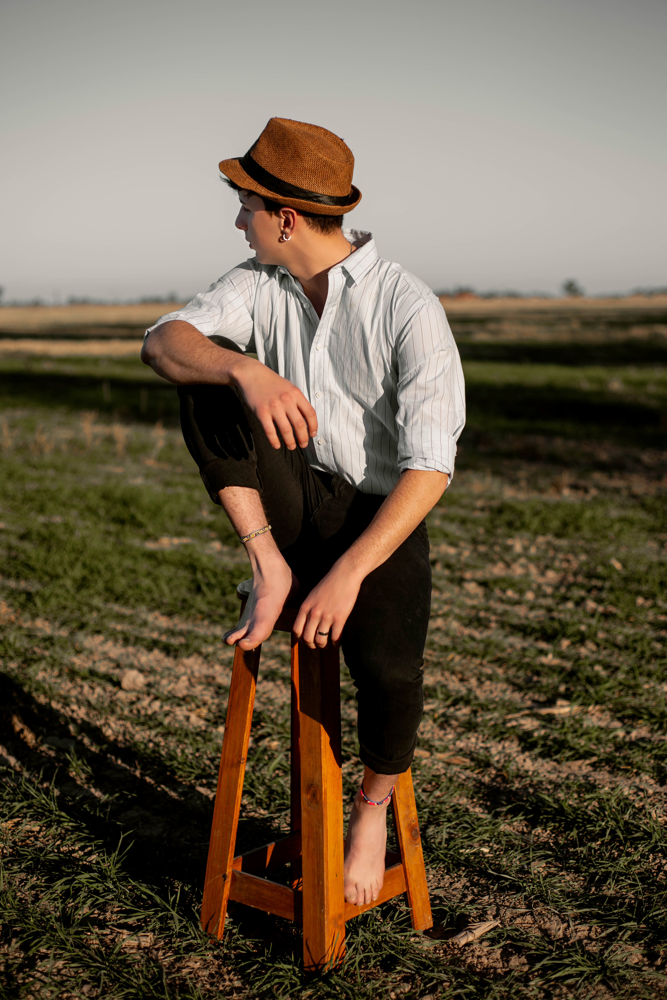

Nuestro Método, Estilo & Profesionales
Detrás de cada imagen hay una mirada coordinada. Conocé cómo planificamos, filmamos, editamos y quiénes hacemos posible que tu gran noche quede registrada para siempre.
Dirección de Autor: Luca Monteserin
Entiendo la fotografía y el video como un único lenguaje armónico. Lejos de las viejas coberturas invasivas con luces deslumbrantes o poses armadas cada dos minutos, nuestro objetivo es acompañar sin entorpecer.
Desde la primera reunión previa hasta el master final, dirijo cada proyecto asegurando coherencia estética, ritmo ágil y la naturalidad que merecen los momentos irrepetibles.
Eventos Dirigidos
De Trayectoria

"No creamos recuerdos artificiales; capturamos la emoción real tal como la viviste."
El Equipo de Trabajo
Profesionales de confianza que operan con sincronía y equipos técnicos de última generación.
Segundos Fotógrafos
Mientras la lente principal sigue a los protagonistas, el segundo fotógrafo captura reacciones simultáneas, abrazos espontáneos y el ambiente en las mesas.
Filmmakers 4K & Drone
Cámaras mirrorless de alta gama, estabilizadores electrónicos (gimbals), micrófonos de solapa inalámbricos y pilotos certificados de dron para planos aéreos de cine.
Coloristas & Post-producción
El evento no termina cuando se apagan las luces. Nuestro equipo en estudio respalda inmediatamente en doble almacenamiento, clasifica, revela y masteriza el audio.
Estilo Visual & Color Signature
Nuestro revelado busca tonos de piel naturales, sombras limpias y contrastes atemporales que no pasen de moda con los años.
 Crudo / RAW
Color Signature
Crudo / RAW
Color Signature